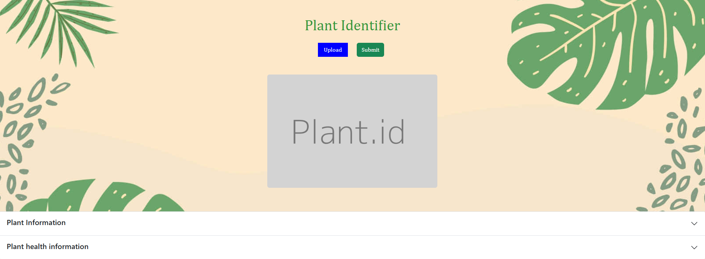

Project Lead: Karandeep Singh
Duration: 06/09/2025 -> 7/18/2025
This case study is the documentation for my Plant Health Identifier API. The main purpose of this API is to assist those who work on farms in identifying any anamolies within their plants or any diseases. With this tool it is hopefully possible for farmers to have access to knowledge abot their crops/plants as early into the growing process as possible.
The Background: This documentation was found to be necessary in order to showcase my abilities with API tools, Web Development, and to showcase my ability to make real applications
The Problem:There aren't enough public resources for the agriculture industry to utilize. Especially those that are web and API based.
Project Timeline
Budget: Free because only open-source tools were used
Recommendations: I would recommend utilizing bootstrap in order to get proper responsive design. I would also suggest to keep checking your html as you write your javascript to make sure your variables match.
Contributing Factors to the issue: The main aspects that contribute to this issue is the non-existince of plant issue related tools.
Strengths and Weaknesses: The best aspects of this API is how mobile friendly it is and it's accesibility. The weakness would be the limitations of the database and slow API response times.
Steps Taken: Learning HTML, CSS, JavaScript, Bootstrap, and API Implementations
What Concepts have you learned from Change Food for Good's Intro to AgTech Course that apply to your case? Through my ITAG Course I've gained skills in coding and problem solving, such as API calls and about the agriculture fields need for better technology.
Large delays in API calls and multiple syntax errors when coding the api.
A lot of code comparisons, documentation analysis, and debugging.
The goal was reached to create a fully functional API tool that can identify plant types and diseases.
For the Future: I would attempt to speed up the api call process via contacting kindwise.
Biggest Takeaway: Tools that have API's involved should be treated very carefully in order to avoid any errors.